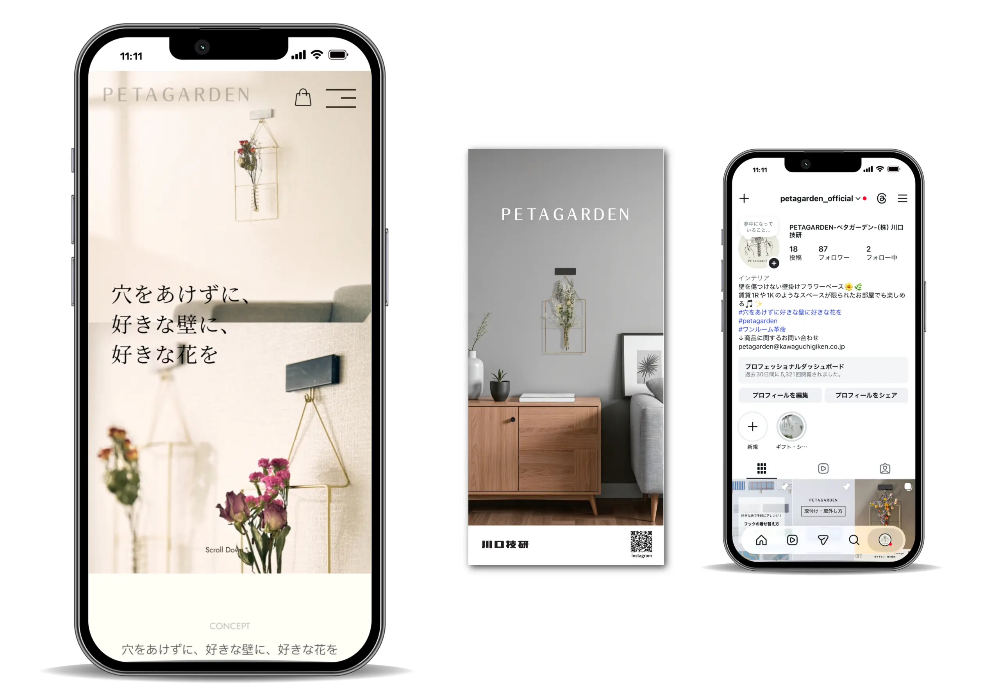
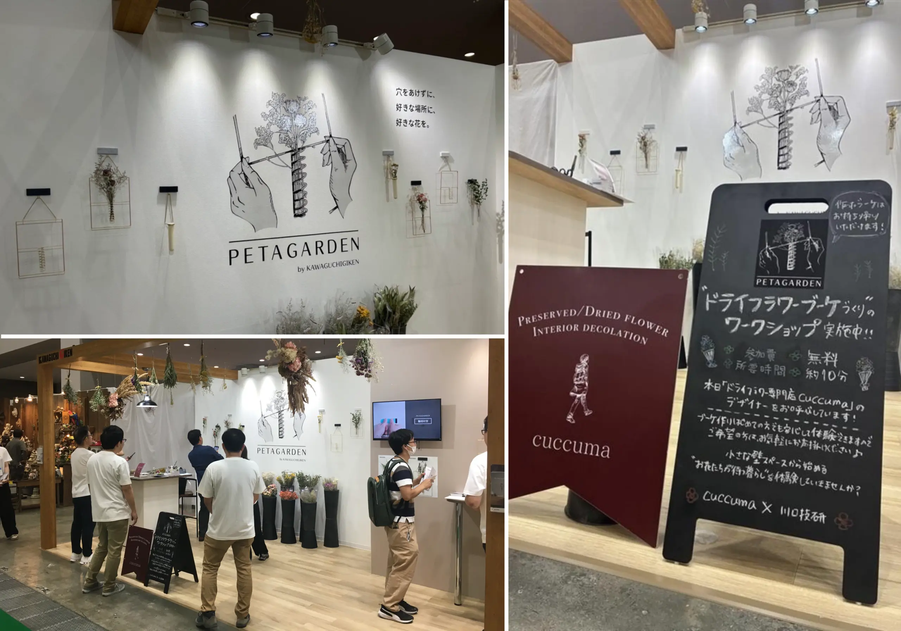
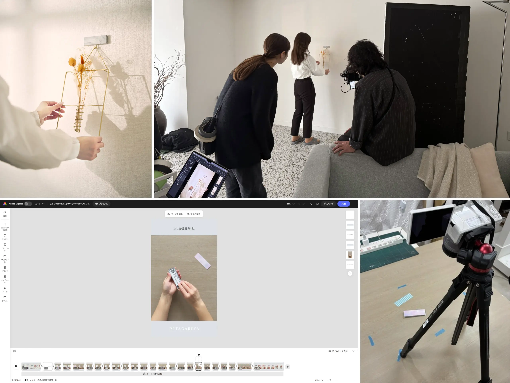
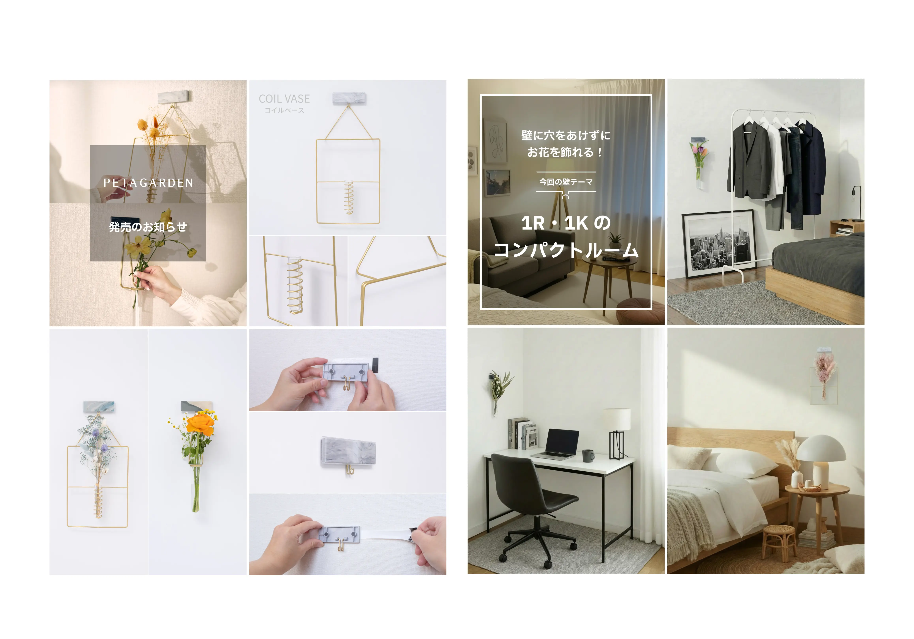
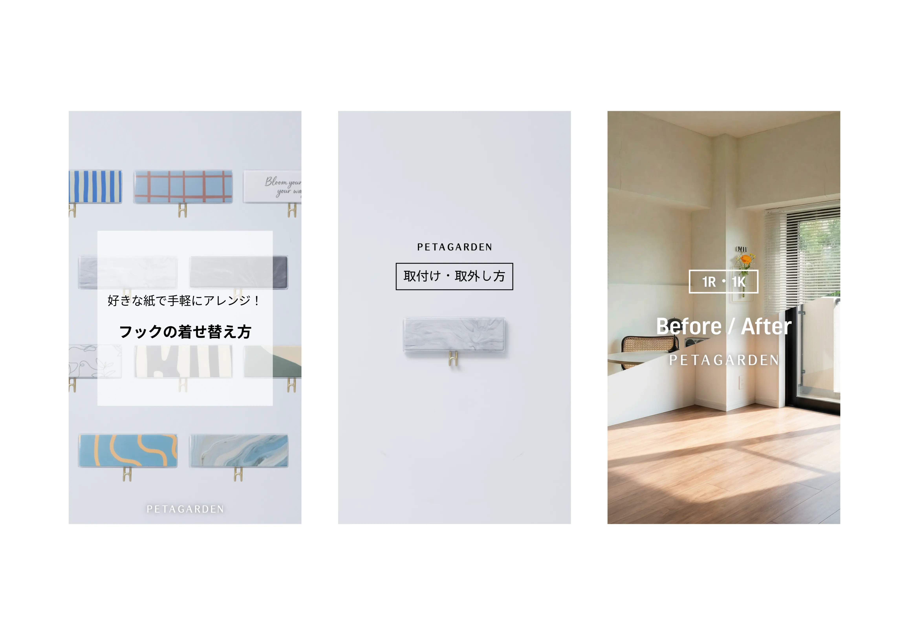

展示会 / WEB / SNS
D2C商品「壁付けフラワーベース」のトータルブランディング
ディレクション：LP制作における進行管理、ワイヤーフレーム・デザインチェック
ビジュアル制作：商品写真撮影、レタッチ、動画編集、生成AI（Firefly）による実写合成
展示会＆SNS：販促チラシ制作（構成・印刷管理）、Instagram立ち上げ・運用

概要・課題
住宅設備メーカーとして初の「D2C商品」の立ち上げプロジェクト。toBメインの組織において、一般消費者にブランドの世界観をどう浸透させるかが最大の課題でした。商品完成前の展示会出展や、SNSを通じたファン作りの体制構築など、ゼロからの販促・広告基盤作りをリードしました。
こだわり・戦略
プロの技術を最大化するディレクション：
LP制作では、外部制作会社と密に連携。自社の強みを深く理解しているからこそできる、綿密な情報整理とデザインフィードバックを行い、ブランドイメージを損なわない高品質なサイト構築を実現しました。
生成AIと独学スキルによる「内製化」の追求：
撮影機材の制約や現物が手元にないという課題に対し、Adobe Firefly等の生成AIを活用して実写と合成した高品質な使用イメージを自作。また動画制作も独学で習得し、スピード間のある情報発信体制を構築しました。
データに基づいた「育てる」運用への挑戦：
Instagram運用では現在、「広告からLP、ECサイトへの誘導」を最適化するための導線設計に注力。単なる投稿に留まらず、インサイト分析に基づいたコンテンツ改善を繰り返しており、ブランドの成長を最大化するためのPDCAサイクルを加速させています。



